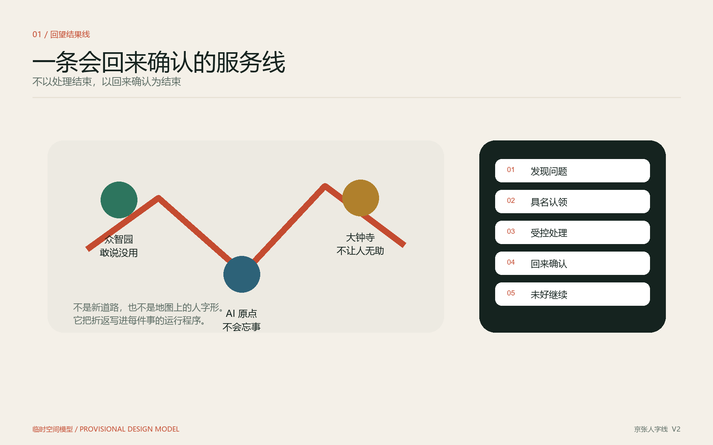
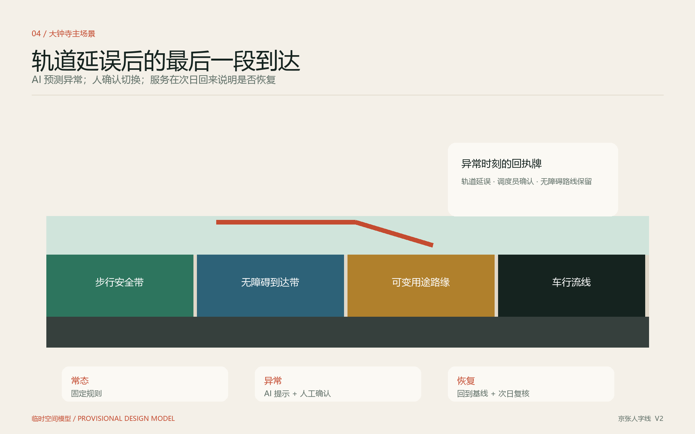

01 / REMEMBER
系统会记得
每件事保留同一条可追溯记录，不把复发问题变成新的数字。
问题类型 · 复核日 · 是否复发
城市不为“上线一套 AI 系统”买单，而为真实任务被安全完成、经过独立验收并形成持续结果买单。
CONCEPTUAL EXPERIENCE IMAGE · NOT EXISTING SITE
系统负责记住，主责方负责回来，公众有权否决“已解决”。公开责任与结果，不公开当事人；先让人看得懂、找得到，再让 AI 在背后工作。
每件事保留同一条可追溯记录，不把复发问题变成新的数字。
启用前写明唯一主责运营方。协作不能冲淡谁要回应和复核。
受影响者只需回答“还没好”，不必重新投诉或反复提交证据。
“线”是沿现场分布的城市服务回执，不是新道路；“三环”是三区独立闭环；“两翼”提供合同、标准、评测、迁移、观察和可逆原型能力。

每个区都能独立完成问题、责任、运行、验收和退出；差异只在公众最容易记住的旗舰场景。
问题台 → 影子试验 → 独立评测 → 采用、不采用或退出
候选池 → 容量认领 → 响应闭环 → 结果闭环 → 结构升级
固定规则先行 → 异常 AI 辅助 → 人工确认 → 可降级停止
常态由固定规则和人工流程承担，AI 先进入影子模式。只有在安全、任务、负担和成本上达到预先约定条件，才允许进入有限运行。
先在权责明确的内部路缘验证到达、超时释放、异常恢复和无障碍最低服务，再依法申请公共节点。
识别不是派单；只有具名执行能力认领后才生成正式任务，反复问题升级到结构原因。
AI 只给建议、不改变现场；独立比较人工基线后形成付费采用或有证据不采用。
行动不便者最后一段独立、安全到达。
轨道延误、天气和活动的临时分流。
自主认领、公共利益容量与安全应急。
把复发转成空间、规则和资源原型。
在现场公开责任、进度、结果和复发。
成功、失败、不采用和停止都可见。
三项空间指标可由当前包内临时几何复算；运营指标仍待真实基线，不用目标数或模型准确率冒充现场效果。

每个项目都以基线、影子模式、人工确认、独立验收和观察期作为阶段门。约百日是受控验证概念周期，不是官方工期。
| 项目 | 首期动作 | 扩大条件 | 未通过时 |
|---|---|---|---|
| P-01 | 受控共享路缘 | 安全 + 任务 + 负担 + 无障碍 | 恢复固定规则 |
| P-02 | 街道问题两级闭环 | 具名责任 + 复发升级 | 暂停新增信号 |
| P-03 | 产品影子采用 | 独立复核 + 可迁移 | 不采用并退出 |
| P-04 | 分布式服务回执 | 及时 + 一致 + 可纠错 | 纸本/人工替代 |
| P-05 | 三处公共地标 | 场所 + 文保 + 消防 + 运维 | 不建设固定实体 |
| P-06 | 年度公开验证周 | 日常服务不受扰动 | 缩小或取消 |
可复算不等于官方；可展示不等于建成；试验完成不等于真实采用。方案把缺口保留在证据链中，而不是用精细图面隐藏它。
下列栏目在提案正文、图件、机器可读几何与指标文件中交叉对应；其中空间数值均服从本页已声明的临时数据边界。